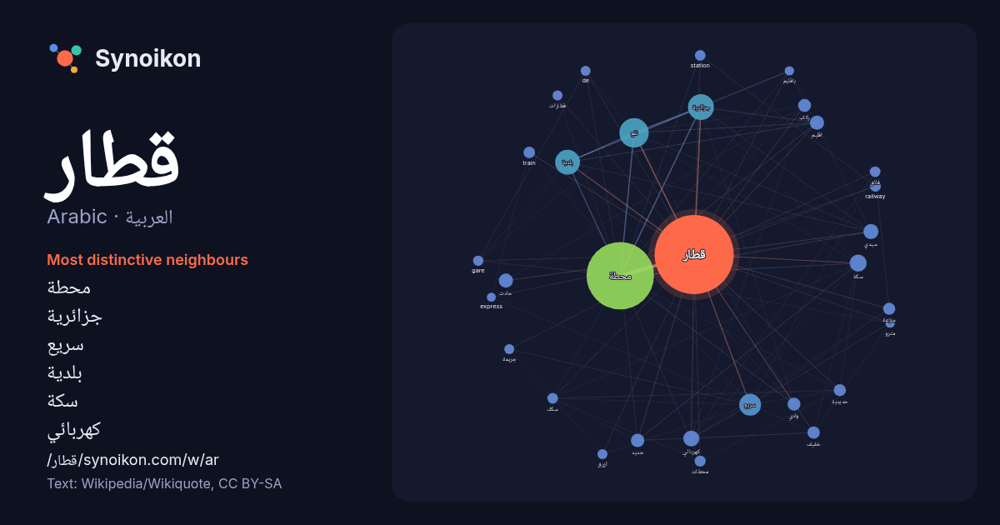

العربية · Arabic · word of the day list
قطار
“train” · The words found around it in 932 instances from Arabic Wikipedia, Wikiquote.

Most distinctive neighbours
- محطة 383×
- جزائرية 77×
- سريع 48×
- بلدية 44×
- سكة 38×
- كهربائي 30×
- تقع 30×
- سيدي 23×
- حادث 23×
- ركاب 22×
- خفيف 21×
- train 21×
- railway 19×
- حديد 19×
- station 18×
- حديدية 17×
- gare 17×
- فائق 17×
- محطات 15×
- قطارات 15×
× = how many times more often than in general Arabic Wikipedia text.
Most frequent neighbours
- محطة 678
- تقع 129
- جزائرية 100
- بلدية 92
- سريع 71
- سكة 43
- كهربائي 38
- سيدي 34
- اقليم 30
- حادث 30
- مدينة 30
- حديد 27
- ركاب 25
- وادي 25
- خط 24
- فرنسية 24
- خفيف 23
- فيلم 23
- حديدية 22
- سرعة 22
In context
- جريمة في قطار الشرق السريع (الإنجليزية: Murder on the Orient Express) هي رواية تحقيق من تأليف أجاثا كريستي والتي تدور أحداثها حول المحقق البلجيكي هيركيول Wikipedia snippets · جريمة في قطار الشرق السريع
- قطار الرياض الكهربائي؛ ويُعرف بمسمّى مترو الرياض هو جزء رئيس من مشروع الملك عبد العزيز للنقل العام بمدينة الرياض، الذي يتكون من قطارات وحافلات، يتكون المترو Wikipedia snippets · قطار الرياض
- القطار الكهربائي السريع أو حابي هو مشروع إنشاء أربع خطوط لقطار سكة حديد كهربائي فائق السرعة لنقل الأفراد والبضائع في مصر بإجمالي أطوال حوالي 2000 كم، الخط Wikipedia snippets · القطار الكهربائي السريع (مصر)
- حادث قطار الصعيد 2002 كان حادث قطار حصل بالقطار رقم 832 المتجه من القاهرة إلى أسوان والذي أدى إلى مقتل 361 شخصاً. وتعتبر الحادثة من أسوأ حوادث القطارات في Wikipedia snippets · حادث قطار الصعيد 2002
- القطار الكهربائي الخفيف (الإنجليزية: Light Rail Transit - LRT) أو القطار المكهرب أو قطار العاصمة أو قطار القاهرة في مصر هو خط قطار سكة حديد خفيف كهربائي Wikipedia snippets · القطار الكهربائي الخفيف (مصر)
- قطار الحرمين السريع خط سكة حديدية كهربائي في السعودية، يربط بين منطقتي مكة المكرمة والمدينة المنورة خلال 120 دقيقة فقط مرورًا بمحافظة جدة، ومدينة الملك Wikipedia snippets · قطار الحرمين السريع
- قطار الشباب تعديل - تعديل مصدري - تعديل ويكي بيانات قطار الشباب هو مشروع قومي تنفذه وزارة الشباب والرياضة المصرية، تأسس عام 1984. يهدف المشروع إلى تنظيم Wikipedia snippets · قطار الشباب
- ومضى قطار العمر هو فيلم مصري عرض عام 1975، بطولة فريد شوقي وناهد شريف وسمير صبري، ومن إخراج عاطف سالم. تدور الأحداث حول مدبولي الذي لا يملك من الدنيا سوى Wikipedia snippets · ومضى قطار العمر (فلم)
More Arabic words
- أغنية
- إله
- تاريخ
- جبل
- جرس
- جزيرة
- جسر
- حديقة
- حصان
- حقيقة
- حياة
- خبز
- خريطة
- خريف
- ذهب
- زمن
- ساعة
- شاي
- شتاء
- صحة
- صحراء
- صمت
- صيف
- طبيعة
- طريق
- طعام
- ظل
- عائلة
- عاصفة
- عسل
- علم
- عمل
- غابة
- فن
- قطة
- قلب
- قوة
- كلب
- لغة
- ماء
- مال
- مدينة
- مرآة
- مطر
- ملح
- مناخ
- موت
- نجم
- والدة
Precomputed on 2026-10-09 with default settings (±5 words, medium corpus). The interactive map can refresh it with live data.